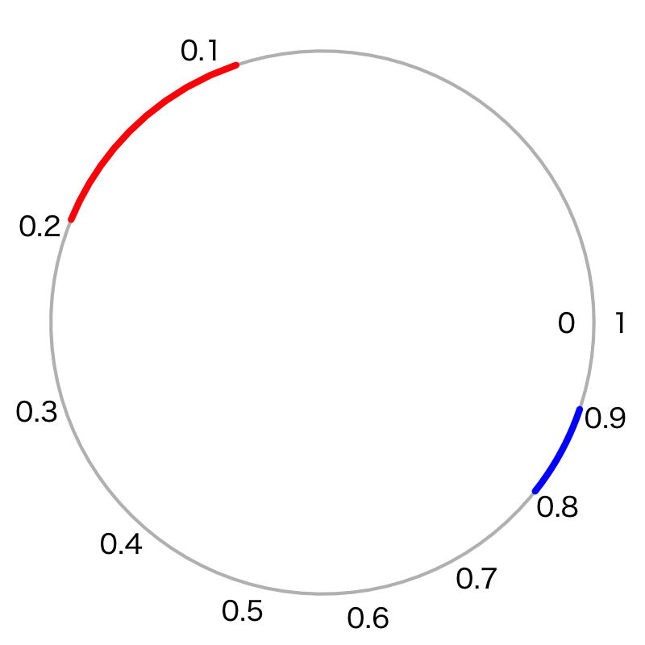
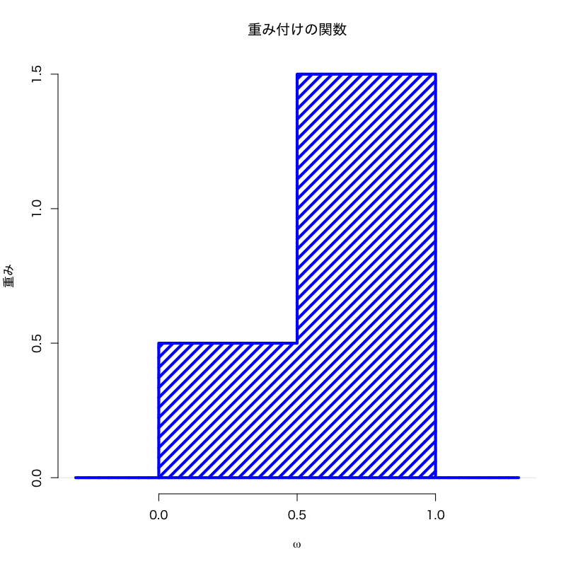
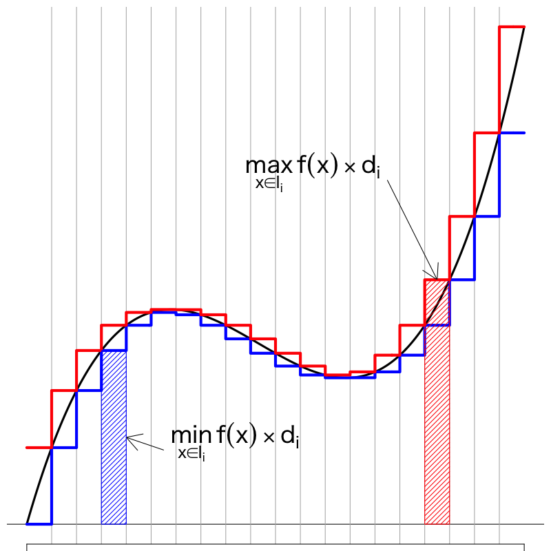
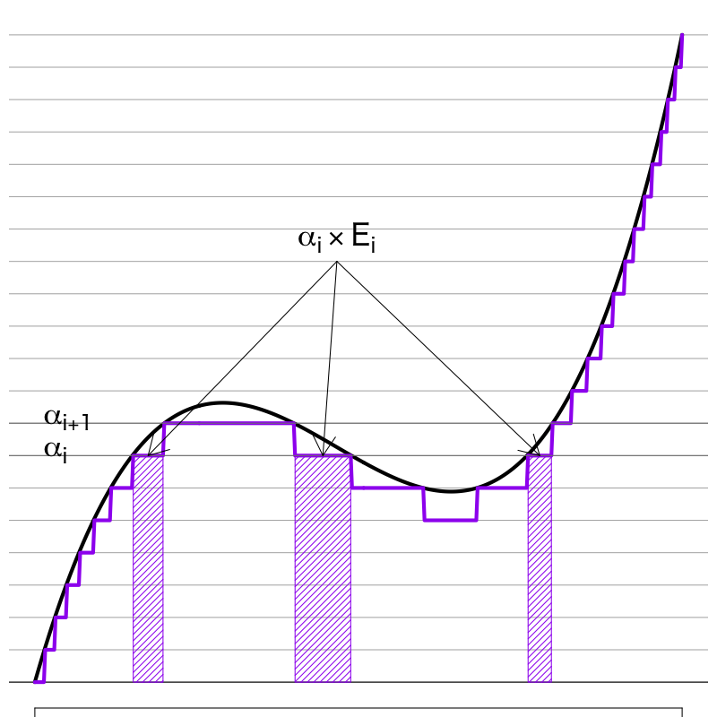
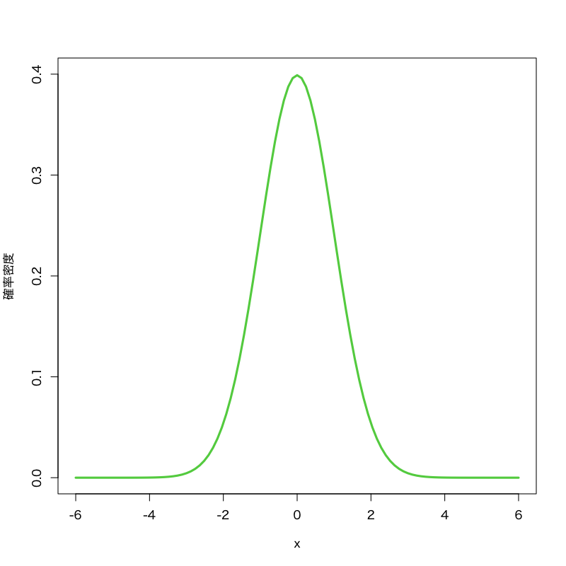
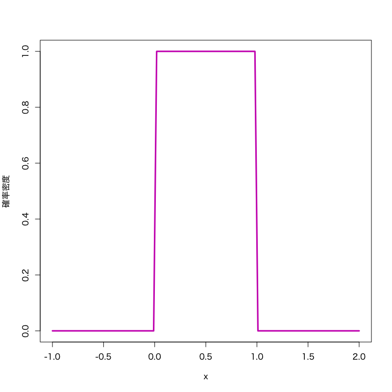
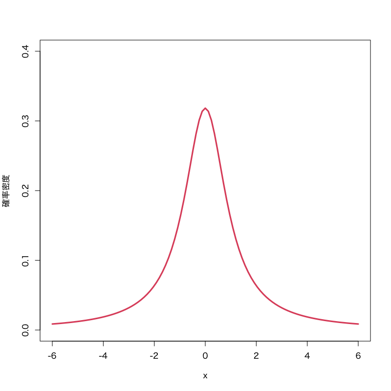
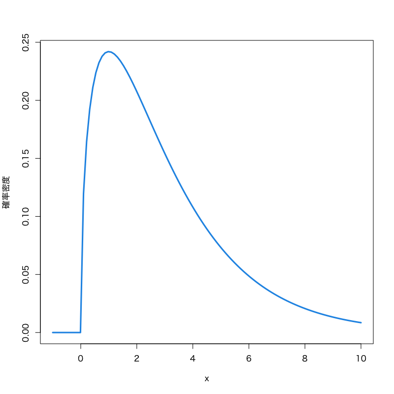
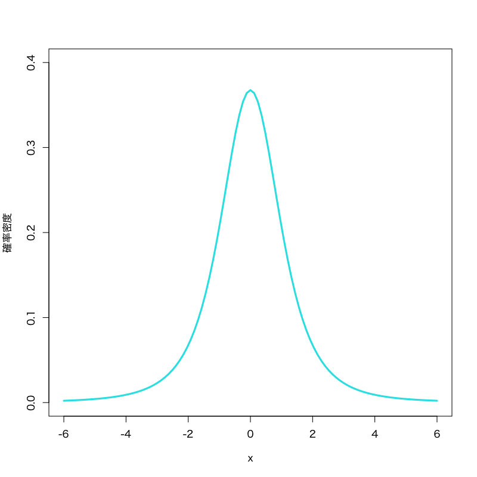
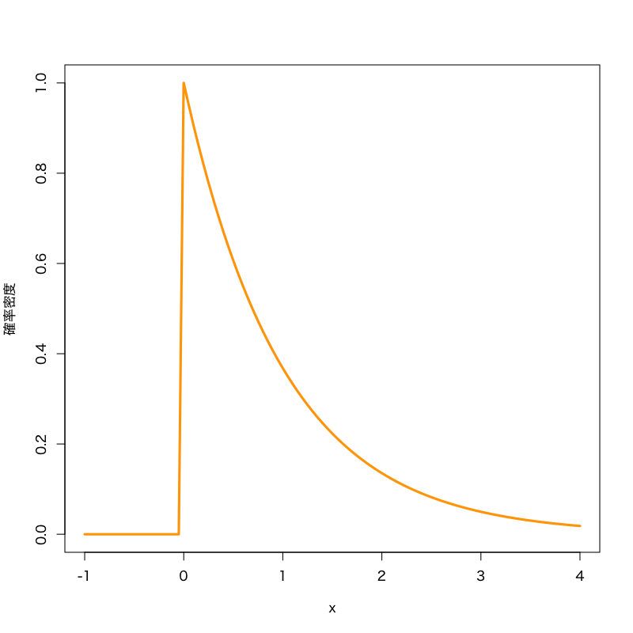

確率・統計 第3回
(Press ? for help, n and p for next and previous slide)
村田 昇
問題
起点 \(0\) から周に沿った長さ \(l\) の位置の目盛りの値を
\begin{equation} x=l^{2} \end{equation}としてルーレットを作る．
事象として同じ長さの区間 \([0.1,0.2]\), \([0.8,0.9]\) を考えたとき， その確率
\begin{equation} P([0.1,0.2]),\quad P([0.8,0.9]) \end{equation}の大小関係はどのような関係になるか?
解答
\begin{equation} P([0.1,0.2]) > P([0.8,0.9]) \end{equation}
考え方
これまで扱ってきた単純なルーレットに対応づけて考えるればよい．
- 歪んだ目盛りの指す区間: \([a,b]\)
- これまでのルーレットでの区間: \([\sqrt{a},\sqrt{b}]\)
したがって確率測度は以下で計算される．
\begin{equation} P([a,b]) = \sqrt{b}-\sqrt{a} \end{equation}
問題
「 \(\Omega=[0,1]\) の点を異なる確率で抜き出す」 という試行において， 区間 \([0,0.5)\) から点が抜き出される事象と， 区間 \([0.5,1]\) から点が抜き出される事象を比較すると， 前者より後者が3倍起こりやすい状況を考える．
このとき確率測度をどのように定義すれば良いか?
解答

\begin{equation} f(x)= \begin{cases} 0.5, & (0\le x<0.5)\\ 1.5, & (0.5\le x\le1) \end{cases} \end{equation}として， 確率測度を
\begin{equation} P(A)=\int_{A}f(\omega)d\omega \end{equation}で定義する．
確率の偏りの確認
例えば区間 \([0.1,0.2]\) と \([0.8,0.9]\) を比べてみる
\begin{align} P([0.1,0.2])&=\int_{0.1}^{0.2}f(\omega)d\omega =\left[0.5\omega\right]_{0.1}^{0.2}=0.05\\ P([0.8,0.9])&=\int_{0.8}^{0.9}f(\omega)d\omega =\left[1.5\omega\right]_{0.8}^{0.9}=0.15 \end{align}
以下の3つの条件が成立する
\begin{align} (P.1)\quad &P(A)\ge 0,\; A\in\mathcal{F}\\ (P.2)\quad &P\biggl(\sum_{n=1}^\infty A_n\biggr) =\sum_{n=1}^\infty P(A_n),\; A_n\in\mathcal{F}\\ (P.3)\quad &P(\Omega)=1 \end{align}
(P.3) 区間 \([0,1]\) 上の積分
より全確率が \(1\) となっている
定義
確率測度がある関数の積分
\begin{equation} P(A)=\int_{A}f(\omega)d\omega \end{equation}で書かれているとき， その被積分関数を 確率密度(関数) (probability density function) という．
また確率密度を持つ確率測度を 絶対連続 (absolutely continuous) な分布と呼ぶ．
歪んだ目盛りのルーレット
歪んだ目盛をもつルーレットの確率密度は， 任意の \(a,b\;(0 < a < b\le1)\) に対して
\begin{equation} P([a,b]) = \int_{a}^{b}f(\omega)d\omega = \sqrt{b}-\sqrt{a} \end{equation}となる 以下の関数 \(f\) である．
\begin{equation} f(\omega)= \begin{cases} \frac{1}{2\sqrt{\omega}},&(0<\omega\le1)\\ 0,&(\text{それ以外}) \end{cases} \end{equation}
歪んでいないルーレットと対応づければ良い．
(\(g\) が単調増加の場合，減少する場合は符号に注意)
定義

有界な積分領域 \(K\) を \(n\) 個の区間 \(I_i\) (幅は \(d_i\)) に分割する． 各区間における関数 \(f(x)\) の最小値と最大値を用いて 有限和 \(s_n\),\(S_n\) を次のように定義する．
\begin{align} s_n &=\sum_{i=1}^n\min_{x\in I_i}f(x)\times d_i\\ S_n &=\sum_{i=1}^n\max_{x\in I_i}f(x)\times d_i \end{align}
各区間の大小関係から
\begin{equation} s_n\le S_n \end{equation}が成り立っているが，分割を細かくしたとき， それぞれの極限が存在して， なおかつ一致するならば， これを \(f(x)\) の Riemann積分 (Riemann integral) という．
\begin{equation} \lim_{n\to\infty}s_n =\lim_{n\to\infty}S_n =\int_K f(x)dx \end{equation}
定義

区間 \(K\) 上で定義された 関数 \(f(x)\) の値域を \(n\) 個の区間に分割する． 区間の端点を \(\alpha_i\) とし， \(f(x)\) が区間 \([\alpha_i,\alpha_{i+1})\) で値を取る \(x\) の領域を \(E_i\subset K\) で表し， \(E_i\) 上で値が \(\alpha_i\) となる 階段関数 \(f_n(x)\) (単関数)を考える．
このとき \(\mu\) をLebesgue測度とし， 単関数 \(f_n(x)\) の Lebesgue積分 を
\begin{equation} \int_K f_n(x)dx =\sum_{i=1}^n\alpha_i\mu(E_i) \end{equation}で定義する． 分割を細かくしたとき \(f_n(x)\) は \(f(x)\) に近づいていくが， この極限が存在するならば， これを \(f(x)\) の Lebesgue積分 (Lebesgue integral) という．
\begin{equation} \lim_{n\to\infty}\int_K f_n(x)dx =\int_K f(x)dx \end{equation}
Lebesgue積分特有の記法
2つの積分を明示的に区別するために， Lebesgue積分を
\begin{equation} \int_K f(x)\mu(dx), \quad\text{($\mu$はLebesgue測度)} \end{equation}と書くことがある．
特異な例
\([0,1]\) 上で次のような関数
\begin{equation} f(x)= \begin{cases} 1, & \text{$x$が有理数}\\ 0, & \text{$x$が無理数} \end{cases} \label{eq:dirichlet_fn} \end{equation}を考える．
この関数はDirichletの関数と呼ばれ
と書けることが知られている．
Riemann積分の場合
どんな短い区間 \(I_i\) にも有理数と無理数は混在するので
\begin{equation} \min_{x\in I_i}f(x)=0,\quad \max_{x\in I_i}f(x)=1 \end{equation}\begin{align} s_n&=\sum_{i=0}^{n}0\times d_{i}=0\\ S_n&=\sum_{i=0}^{n}1\times d_{i}=1 \end{align}であり， \(n\) をいくら大きくしても極限は一致しない． したがってこの関数のRiemann積分は存在しない．
Lebesgue積分の場合
適当な値域の分割において
\begin{equation} \alpha_{i}\le 0<\alpha_{i+1},\quad \alpha_{j}\le 1<\alpha_{j+1} \end{equation}となるのであれば，Lebesgue測度の性質より
\begin{equation} \int f_{n}(x)dx = \alpha_{i}\times\mu(\text{無理数})+\alpha_{j}\times\mu(\text{有理数}) = \alpha_{i}\cdot1+\alpha_{j}\cdot0=\alpha_{i} \end{equation}となるが， \(n\to\infty\) のとき \(\alpha_{i}\to0,\;\alpha_{j}\to1\) となるので
\begin{equation} \int f(x)dx = 0\times\mu(\text{無理数})+1\times\mu(\text{有理数}) = 0 \end{equation}となりLebesgue積分可能である．
定理
有界閉区間 \(K\) で \(f\) が連続なら， \(K\) 上の \(f\) のLebesgue積分の値はRiemann積分の値と一致する．

Figure 5: 正規分布 (平均\(0\),分散\(1\))
- 見本空間: \((-\infty,\infty)\)
- 母数: 平均 \(\mu\), 分散 \(\sigma^{2}\)
密度関数:
\begin{equation} f(x) = \frac{1}{\sqrt{2\pi}\sigma}e^{-\frac{(x-\mu)^{2}}{2\sigma^{2}}} \end{equation}- 備考: \(\mu=0,\sigma=1\) のとき 標準正規分布 と呼ぶ．

Figure 6: 一様分布 (区間\([0,1]\))
- 見本空間: 区間 \([a,b]\)
- 母数: 区間の端点 \(a,b\)
密度関数:
\begin{equation} \frac{1}{b-a} \quad(b\le x\le a) \end{equation}- 備考: ルーレット回しの 確率密度関数に相当する．

Figure 7: Cauchy分布 (位置\(0\),尺度\(1\))
- 見本空間: \((-\infty,\infty)\)
- 母数: 位置 (location) \(\mu\) ， 尺度 (scale) \(\sigma\)
密度関数:
\begin{equation} f(x)= \frac{1}{\pi\sigma}\left(1+\frac{(x-\mu)^{2}}{\sigma^{2}}\right)^{-1} \end{equation}- 備考: 裾の重い分布の典型として用いられる． 正規分布の比から導かれる．

Figure 8: \(\chi^{2}\) -分布 (自由度\(3\))
- 見本空間: \([0,\infty)\)
- 母数: 自由度 \(\nu\)
密度関数:
\begin{multline} f(x)= \frac{1}{2^{\nu/2}\Gamma(\frac{\nu}{2})}x^{\nu/2-1}e^{-x/2}\\ \Gamma(z)=\int_0^\infty e^{-t}t^{z-1}dt \end{multline}- 備考: \(\nu\) 個の標準正規分布の2乗和の分布で， 検定に利用される．

Figure 9: \(t\) -分布 (自由度\(3\))
- 見本空間: \((-\infty,\infty)\)
- 母数: 自由度 \(\nu\)
密度関数:
\begin{equation} f(x)= \frac{\Gamma\left(\frac{\nu+1}{2}\right)} {\sqrt{\nu\pi}\Gamma\left(\frac{\nu}{2}\right)} \left(1+\frac{x^{2}}{\nu}\right)^{-\frac{1}{2}(\nu+1)} \end{equation}- 備考: 標準正規分布と 自由度 \(\nu\) の \(\chi^{2}\) -分布の比の分布で， 検定に利用される．

Figure 10: 指数分布(比率\(1\))
- 見本空間: \([0,\infty)\)
- 母数: 比率 (rate) \(\lambda>0\)
密度関数:
\begin{equation} f(x)= \frac{1}{\lambda}e^{-\frac{x}{\lambda}} \end{equation}- 特徴: タクシーなどの待ち時間のモデル として利用される．
確率測度を
\begin{equation} P(A)=\delta_a(A)= \begin{cases} 1, & a\in A\\ 0, & a\not\in A \end{cases} \end{equation}で定義する． これは
\begin{align} &(\text{$a$が抜き出される確率})=1\\ &(\text{$\Omega-{a}$の点が抜き出される確率})=0 \end{align}であるから，\(\Omega\) から1点抜き出すと それは ほとんど確実に \(a\) であるような 抜き出しを考えていることになる．
有理数の抜き出し
有理数 \(\mathbb{Q}_{[0,1]}\) 全体に番号をふり， これを \(q_{1},q_{2},\dotsc\) で表す．
\begin{equation} P(A)=\sum_{i:q_i\in A}2^{-i} \end{equation}という確率測度を考える． 例えば
\begin{equation} P(\mathbb{Q}_{[0,1]})=1,\quad P(\Omega-\mathbb{Q}_{[0,1]})=0 \end{equation}である．
この確率測度においては確率密度を考えることができない． なぜなら1点 \(q_i\) の起こる確率は
\begin{equation} P\{q_i\}=2^{-i} \end{equation}であるので， 密度関数 \(f\) は
\begin{equation} P\{q_i\}=\int_{\{q_i\}}f(x)\mu(dx) =f(q_i)\times\mu(q_i)=2^{-i} \end{equation}とならなくてはいけないが， 1点のLebesgue測度は0なので
\begin{equation} f(q_i)\times\mu(q_i) =f(q_i)\times0=0 \end{equation}となり， \(f\) を構成することは不可能である．
正規分布の確率密度関数
が \((-\infty,\infty)\) で積分すると1となることを確かめよ.
次の関数が確率密度となるように \(a\) を定めよ．
2つの正規分布の積を考えて， 重積分を極座標に変換すればよい． 簡単のため変数変換した
を考えると 以下のように計算できる．